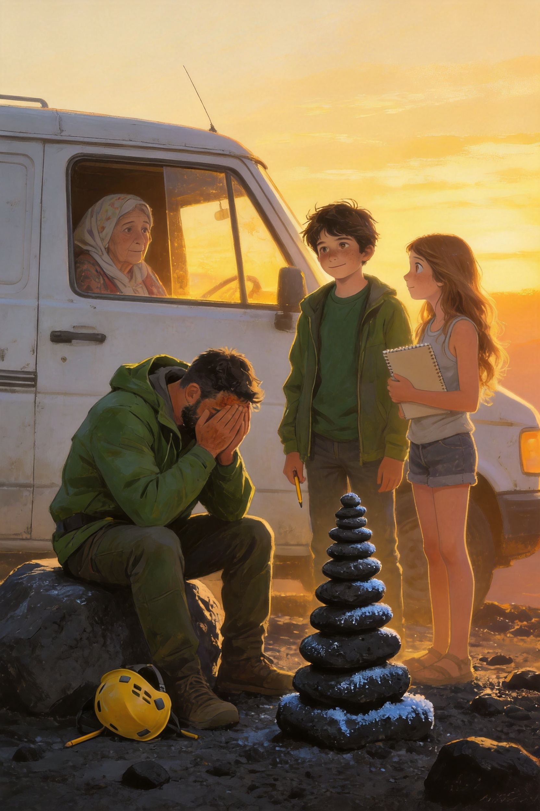
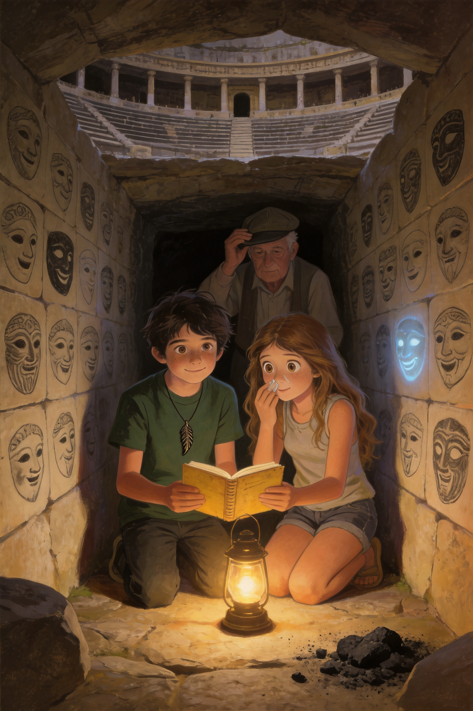
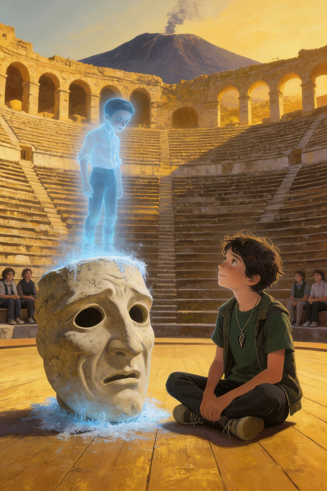

Due settimane dopo la vittoria sotto l'Etna, la scuola di Trappitello sembrava tornata normale. Il pino nel cortile, la campanella delle otto e cinque, la merenda alle dieci e cinquantacinque. Perfino Salvatore aveva ricominciato a mangiare panini di nascosto durante la lezione di tecnologia.
C'era soltanto una cosa che non tornava. Ogni mattina, quando arrivava, il signor Nino trovava una finestra coperta di brina.
— Ma da quando fa questo freddo? — borbottava, grattandosi la testa con il manico della scopa. — Siamo a metà ottobre! E il riscaldamento neanche funziona!
Il martedì mattina Vlad e Ludovica lo trovarono nel corridoio del primo piano, davanti a una finestra bianca come un panettone.
— Lo vedete anche voi? — chiese lui.
— Lo vediamo — rispose Ludovica, e aprì la cartellina rossa sotto il braccio.
La Squadra Etna aveva continuato a incontrarsi anche dopo la grotta. Il gruppo si chiamava ancora così, e nessuno aveva voglia di cambiare nome.
— Aggiorno il registro — disse Matilde, che si era autonominata cronista ufficiale. Aprì il quaderno con un gesto preciso. — Lunedì scorso: aula di musica. Martedì: le scale. Mercoledì: la palestra. Giovedì: la sala dei professori. Ieri: la bidelleria. Oggi: corridoio del primo piano.
— Sempre alle sette e cinquanta — aggiunse Thomas, che aveva appeso un termometro digitale vicino alla finestra. — E ogni volta la temperatura scende di nove gradi, in dieci minuti. Poi risale.
Wijdane si chinò sulla mappa della scuola che Aurora aveva disegnato, e tracciò una linea con il dito, da un punto all'altro.
— Guardate — disse. — Ogni giorno la finestra è più vicina alla biblioteca. Come se qualcuno stesse camminando verso di lei.
— Qualcuno? — chiese Simone.
— Qualcosa. Ci ha messo due settimane per arrivarci. E oggi ci siamo.
Vlad sentì la Piuma, sotto la maglietta, battere una volta. Piano. Come qualcuno che bussa a una porta.
La biblioteca era silenziosa. Il signor Nino aprì la porta con il suo mazzo di chiavi grande come una sveglia, e tutti entrarono in fila indiana, in punta di piedi.
Sul fondo, nella luce grigia del mattino, c'era la finestra.
Era coperta di brina, sottile e luminosa. Ma non era una brina qualunque. Aveva dei segni, piccoli e precisi, tracciati con la punta di un dito, dall'interno del vetro: una scrittura inclinata, da ragazzo, con le lettere un po' storte.
Ludovica si avvicinò. Lesse piano, una lettera alla volta.
— E... T... T... O... R... E.
Nessuno disse una parola. Un granello di polvere dorata cadde, in mezzo alla luce.
— Ettore — ripeté Vlad.
— Strano — borbottò il signor Nino, con una voce che non era più allegra. — Quella finestra l'ho pulita ieri sera. E la biblioteca era chiusa a chiave, da dentro.
Vlad toccò il vetro con il dito. Era gelido, ma sotto la brina, per un attimo, gli sembrò di sentire un'altra mano, dall'altra parte. Più piccola. Più triste.
«Quella finestra l'ho pulita ieri sera.»
— Vlad — sussurrò Ludovica, mentre gli altri si avvicinavano al vetro. — Tu quel nome l'hai già sentito.
— Non l'ho sentito. L'ho sognato.
Raccontò tutto a mezza voce. Quella notte, nel sogno, era in una caverna nera, senza pareti e senza soffitto. Su una roccia sedeva un ragazzo magro, con i capelli scuri pettinati all'indietro e un quaderno sulle ginocchia. Disegnava maschere: facce di pietra, con occhi vuoti e bocche aperte, come quelle dei teatri greci.
Il ragazzo alzò la testa. Aveva gli occhi pallidi, stanchi, di chi aspetta da tanto tempo.
— Tu mi hai visto? — chiese.
— Chi sei?
— Qualcuno che hanno dimenticato.
Vlad si era svegliato di colpo, con la finestra della camera coperta di brina e la Piuma calda sul petto. E nella sua testa, dolcissima e vecchissima, la voce aveva detto in russo:
— Он не злой. Он потерялся.
«Non è cattivo. Si è perso.»
Ludovica tirò fuori il vecchio dossier. Sulla copertina c'era ancora scritto DOSSIER S. — CHIUSO, e sotto, più piccolo, Ma chi?
Lei cancellò con la penna le due ultime parole e scrisse al loro posto, in stampatello:
ETTORE.
— Primo punto — disse. — Dobbiamo scoprire chi è. Secondo punto: dove è finito. Terzo punto: perché sono vent'anni che nessuno si ricorda di lui.
— Vent'anni? — chiese Vittoria. — Come lo sai?
— Perché la foto della biblioteca era di vent'anni fa. E il ragazzo in fondo, quello che non sorrideva...
— ...aveva i capelli all'indietro — disse Vlad, piano. — Come nel mio sogno.
Wijdane annuì lentamente.
— Gli archivi della scuola sono in cantina — disse. — Possiamo cercare i vecchi registri.
— E io ho le chiavi — disse il signor Nino, e poi, notando che tutti lo guardavano, si schiarì la voce. — Cioè... non so di cosa parliate. Ma se me lo chiedete bene, potrei anche trovarle.
Nell'atrio risuonarono dei passi. Era la professoressa Siligato, con la borsa piena di quaderni e una sciarpa chiara avvolta due volte intorno al collo. Aveva le occhiaie, e camminava piano, come se avesse dormito poco.
— Buongiorno, ragazzi — disse. — Che ci fate tutti qui, prima della campanella?
Nessuno rispose. Si limitarono a farle spazio, davanti alla finestra.
La prof Siligato guardò il vetro. Per un lungo istante non si mosse. Poi la borsa le scivolò dalle mani e cadde a terra con un tonfo, spargendo quaderni sul pavimento.
— Ettore — sussurrò.
Le tremavano le labbra. Si portò una mano alla bocca, e le lacrime le scesero lungo le guance, senza rumore.
— Non lo dicevo ad alta voce da vent'anni.
Vittoria fu la prima a muoversi. Raccolse i quaderni, li mise nella borsa, e poi le prese la mano.
— Prof — disse con la sua voce dolce. — Ci racconti.
La professoressa si asciugò gli occhi con il dorso della mano. Respirò a fondo, e poi sorrise, un sorriso piccolo e stanco.
— Dopo la sesta ora — disse — in biblioteca. Tutti voi. Vi devo raccontare una storia che non ho mai raccontato a nessuno.
— A nessuno? — chiese Ludovica.
— A nessuno, in vent'anni.
La campanella suonò, fuori dalla biblioteca, e il corridoio si riempì di voci e passi. La prof raccolse la sua borsa e se ne andò lentamente, con la schiena un po' più dritta di prima.
Vlad restò un momento davanti alla finestra. Il sole era salito sopra il tetto, e la brina cominciava a sciogliersi. Le lettere sparirono una dopo l'altra, come ricordi che si dimenticano.
Tutte, tranne una. La prima, la «E», rimase sul vetro, intatta e luminosa, come se il sole non riuscisse a toccarla.
Vlad appoggiò il palmo sul vetro, dall'altra parte.
— Ti abbiamo visto — disse piano. — Ti abbiamo visto, Ettore.
✦ ✦ ✦
Il Custode dell'Etna · Libro 2
Capitolo 2
La gita di vent'anni fa
✦ ✦ ✦
Dopo la sesta ora, la biblioteca sembrava più piccola del solito. Ventuno ragazzi, una professoressa e un bidello si strinsero intorno al grande tavolo di legno, con le sedie accostate e le lampade accese.
La prof Siligato aveva portato un registro dalla copertina grigia, tenuto insieme da un elastico. Lo posò sul tavolo, accanto alla vecchia cornice con la foto. Per un po' non parlò. Fuori, la luce del pomeriggio disegnava un rettangolo dorato sul pavimento.
— Vent'anni fa — cominciò — avevo trentasette anni, ed ero convinta di sapere contare.
Fece un piccolo sorriso triste.
— Insegnavo italiano in una seconda media. La 2ª A. Quattordici ragazzi. Quattordici, ve lo dico subito, perché è un numero che non dimenticherò mai.
— Uno di loro si chiamava Ettore Marenzi. Era magro, silenzioso, con i capelli pettinati all'indietro e un quaderno sempre sotto il braccio. Disegnava. Disegnava soprattutto maschere: quelle del teatro greco, con le bocche aperte e gli occhi vuoti. Suo padre lo portava ogni estate al Teatro Antico di Taormina, e lui conosceva ogni gradino, ogni colonna, ogni pietra.
— Voleva fare lo scenografo? — chiese Aurora.
— Voleva costruire teatri. — La prof sorrise di nuovo. — Era il ragazzo più gentile che abbia mai avuto. Faceva il ritratto a tutti, senza chiedere niente. Ma era anche solo. Gli altri lo chiamavano «il Maschera». Non per cattiveria, o non solo. Ma lui non rispondeva mai. Abbassava gli occhi, e disegnava.
Vlad sentì una stretta al petto. Conosceva quella sensazione: un banco in fondo, una lingua che non è la tua, e nessuno che ti chiama.
Ludovica gli prese la mano, sotto il tavolo, senza dire niente.
— Un giorno — continuò la prof — organizzai una gita alle grotte dell'Etna. Le stesse dove siamo stati noi, un mese fa.
— Partimmo di mattina, con il pullman. Li contai, uno a uno, alla partenza: quattordici. Li contai all'ingresso della grotta: quattordici. Il cielo era limpido e tutti erano contenti.
— Ma c'era qualcosa che io non sapevo. Alcuni ragazzi, quella mattina, avevano organizzato una «prova di coraggio». Chi si fosse spinto più a fondo nella grotta e fosse tornato con un sasso nero in mano, avrebbe vinto. Non so chi l'aveva proposta. Non l'ho mai saputo.
— E Ettore? — chiese Vittoria.
— Lo sfidarono. Gli dissero che, se ci fosse riuscito, non l'avrebbero più chiamato «il Maschera». Lui accettò, perché voleva davvero essere uno di loro.
Nella biblioteca nessuno respirava.
— Entrò da solo, mentre la guida spiegava la lava agli altri. Sparì dietro una curva con la sua lampada. E non tornò più.
Il signor Nino, seduto in fondo, abbassò lo sguardo.
— All'uscita iniziò a piovere — disse la prof. — Dovevamo fare in fretta, perché il pullman aveva l'orario. Li feci mettere in fila. E li contai.
Tese le mani sul tavolo, come se stesse contando ancora.
— Uno, due, tre... tredici. Ricominciai. Tredici. Mi mancava qualcuno. «Dov'è Ettore?», chiesi. E uno di loro rispose: «È già sul pullman, prof». E un altro: «L'ho visto salire io». Altri due annuirono.
— Mentivano — mormorò Wijdane.
— Mentivano. E io, che ero stanca e bagnata, e avevo paura di fare tardi, volevo credere a loro. Salii sul pullman senza controllare.
Si asciugò gli occhi con il dorso della mano.
— Ho scoperto che lui non c'era solo quando siamo arrivati a scuola, due ore dopo.
Quattordici. Poi tredici.
— Tornammo subito alle grotte. Quella notte, e per molte notti, cercarono tutti: i vigili del fuoco, i volontari, il signor Nino, che allora era appena arrivato a scuola.
Tutti si voltarono verso il bidello. Lui annuì, senza parlare, con gli occhi bassi.
— Cercammo per giorni. Trovarono solo una cosa, sul bordo di una fessura molto profonda: una matita, con il nome inciso sopra. Nessun altro segno. Ettore sparì, e il suo caso fu chiuso come «scomparso».
— E gli altri? — chiese Simone. — Quelli che mentirono?
— Dissero tutti di non aver visto niente. Che era stato un incidente. Che lui era entrato da solo. E avevano tredici anni, ed erano spaventati. E io... — la voce le si spezzò — io li ho lasciati dire. Perché non volevo sapere che avevo contato male.
Vittoria le strinse la mano più forte.
— Ogni autunno, da vent'anni — disse piano la prof — prendo in prestito il libro delle leggende. Cerco una storia in cui chi sparisce dentro l'Etna torna. Non l'ho mai trovata.
Nessuno parlò per un po'. Fu Mia a rompere il silenzio, con un filo di voce.
— Allora è Ettore, il fantasma. Quello che ha usato lei.
— Credo di sì. — La prof annuì. — Non so come, ma credo che sia uscito dalla montagna dopo vent'anni, e abbia cercato qualcuno che ricordasse. Io ero la prima. Ero quella che aveva contato male.
— Non è stata colpa sua — disse Vlad.
— Lo ripeto da vent'anni. — Lei sorrise, con gli occhi lucidi. — E non ci credo ancora.
Aprì il vecchio registro e lo girò verso Vlad, con un dito sulla prima pagina. C'erano quattordici nomi, scritti con la sua calligrafia ordinata.
— Qui ci sono tutti. Anche quelli che mentirono. Sono adulti, adesso. Alcuni abitano ancora qui. — Alzò lo sguardo. — Ma ricordate: erano ragazzi di tredici anni. Hanno fatto una cosa stupida, e poi una bugia. Non sono mostri.
Il signor Nino si alzò. Andò a un armadietto in fondo alla biblioteca, rovistò in un cassetto e tornò con una piccola busta di carta ingiallita.
— L'ho conservata io — disse. — Perché non sapevo cosa farne, e perché non volevo buttarla.
Dentro c'era una matita. Corta, consumata, con un nome inciso sopra a lettere minuscole: E. Marenzi.
Vlad la prese. La matita era gelida, come se fosse appena uscita da un ghiacciaio. Il ciondolo sul petto gli bruciò, e per un istante gli sembrò di sentire, molto lontano, una voce di ragazzo.
— Tu mi hai visto?
Sul registro aperto, accanto a un nome scritto con la calligrafia della prof, apparve una piccola macchia di brina. Aveva la forma di una maschera: una faccia di pietra, con gli occhi vuoti e la bocca aperta.
— Come quelle del Teatro Antico — sussurrò Ludovica.
Vlad strinse la matita.
— Allora è lì che dobbiamo andare.
✦ ✦ ✦
Il Custode dell'Etna · Libro 2
Capitolo 3
La storia di nonna Tanya
✦ ✦ ✦
Quella sera, nella cucina di casa, Vlad mise sul tavolo la matita di Ettore. Nonna Tanya la guardò per un lungo momento, senza toccarla.
— È fredda — disse.
— Come il ghiaccio. — Vlad si sedette. — Nonna, hai promesso che mi avresti raccontato perché proprio io. Adesso ne ho bisogno. C'è un ragazzo che è rimasto indietro, e sento che io potrei aiutarlo. Ma non so perché.
La nonna si tolse il foulard, lo piegò con cura e lo posò accanto al samovar.
— È il momento — disse. — Ma le parole non bastano, Vladik. Questa è una storia che si deve vedere. La Piuma sa mostrarla meglio di me.
Si sedette accanto a lui, gli prese la mano e la posò sul ciondolo. Poi cominciò a cantare, piano, la ninnananna di Mia, con una voce vecchia e dolce come il tè con il miele.
Gli occhi di Vlad si fecero pesanti.
Quando aprì gli occhi, c'era neve dappertutto.
Vlad era in piedi in mezzo a un villaggio di legno, tra case basse con i tetti bianchi, il fumo che saliva dritto dai comignoli e una stradina di ghiaccio. Non sentiva il freddo. Si guardò le mani: erano trasparenti, come vetro appannato.
Nessuno lo vedeva. Una donna con un secchio gli passò attraverso senza accorgersene.
— Sono nel passato — mormorò. — Molto nel passato.
Dalla stalla in fondo alla strada arrivava il rumore di un'ascia. Vlad si avvicinò. Un ragazzino magro, con una camicia di lino rattoppata e un gilet di lana, spaccava la legna da solo, in mezzo alla neve.
Aveva i capelli scuri e spettinati, e gli occhi castani. Vlad si fermò. Per un attimo gli sembrò di guardare uno specchio.
— Sei Ivan — disse, senza sapere come lo sapesse.
Un gruppo di ragazzi passò ridendo, davanti alla stalla. Uno gridò: «Ivan l'orfano!». Un altro lanciò una palla di neve. Ivan non alzò lo sguardo. Continuò a spaccare la legna, con gli occhi fissi sulle sue mani.
Vlad capì tutto guardando. Ivan era rimasto solo dopo una febbre che aveva portato via il padre e la madre. Viveva in un angolo della stalla del mugnaio, che gli dava del pane secco in cambio della legna. Nessuno lo invitava alle feste. Nessuno lo chiamava per nome.
Quella sera, nel villaggio, c'era la grande festa d'inverno. Si sentivano musica, risate e profumo di pane dolce. Ivan guardò le finestre accese. Poi si mise il cappello di lana e, senza dire niente, camminò verso il bosco.
Vlad lo seguì.
Era un bosco di betulle bianche, silenzioso, sotto un cielo di un blu profondo. Ivan camminò finché non perse di vista le luci del villaggio. Poi si sedette su un ceppo, con le mani tra le ginocchia, e restò lì.
— Anch'io facevo così — sussurrò Vlad. — In quarta elementare. Mi nascondevo in bagno durante l'intervallo, perché non sapevo cosa dire.
E fu in quel momento che, tra gli alberi, si accese una luce.
Жар-птица.
Dal cielo scese un uccello grande come una casa, fatto di fiamme dorate e rosse. Le sue penne illuminavano la neve, e dove la sua coda sfiorava il terreno, il ghiaccio si scioglieva in piccole pozze luminose. Era l'Uccello di Fuoco, lo Zhar-ptitsa delle fiabe, ma non era una fiaba.
Ivan non scappò. Non gridò. Restò in piedi, a bocca aperta, con gli occhi pieni di meraviglia.
L'Uccello abbassò la testa e lo guardò. Poi parlò, con una voce che sembrava il crepitio di un fuoco di casa:
— Тот, кто остался позади, слышит тех, кто остался позади.
Vlad, che aveva imparato il russo da bambino, tradusse in un sussurro:
— «Chi è rimasto indietro sente chi è rimasto indietro.»
— Molto lontano, a sud — continuò l'Uccello — sotto una montagna di fuoco, dorme un gigante che non riesce a riposare. Qualcuno deve cantargli la ninnananna. Qualcuno che conosca la solitudine, e che non abbia paura di restare accanto a chi soffre.
Una piuma dorata si staccò dall'ala e scese piano, piano, fino alle mani aperte di Ivan.
L'Uccello gli insegnò una canzone. Poche parole, una melodia semplice, quella che Mia avrebbe cantato trecento anni dopo in una grotta dell'Etna. Ivan la imparò al primo ascolto, perché era la prima volta che qualcuno gli dedicava del tempo.
Poi l'Uccello spiegò le ali e svanì tra le stelle.
Il bosco sembrò girare. Vlad vide Ivan tornare al villaggio all'alba, e nessuno credergli. Lo vide partire, qualche anno dopo, con uno zaino di tela e uno strumento a corde sulle spalle, a piedi verso sud, di villaggio in villaggio, cantando per un pezzo di pane. Lo vide invecchiare, con i capelli che diventavano grigi, e poi ancora, e poi non essere più lui, ma un altro, e un altro ancora.
Intorno a Vlad passavano i secoli come pagine di un libro. Un figlio con i capelli neri. Una nipote che attraversa un mare. Un giovane sul ponte di una nave. Una donna in una città di mare, con una piuma al collo.
E ogni volta una cosa era uguale. Il custode era sempre qualcuno che nessuno aveva guardato: un orfano, un profugo, il più piccolo, lo straniero.
I secoli rallentarono. Nell'ultimo quadro c'erano una bambina con un foulard, che aveva la stessa piuma, e poi una giovane donna; poi una donna con un cucchiaio di legno in mano che teneva per mano un bambino di sei anni, a cui metteva al collo un ciondolo.
— Nonna — sussurrò Vlad.
Poi la scena si fermò. Davanti a lui era comparso un uomo, in un bosco di betulle: alto, con la barba grigia, i capelli ricci e gli occhi castani. Era Ivan da vecchio, e lo guardava dritto negli occhi, anche se Vlad era trasparente.
— Влад.
— Mi senti?
— Ti sento. — Il vecchio sorrise. — Ti sento da trecento anni. Eri il bambino arrivato per ultimo in un paese straniero, vero? Quello che non conosceva le parole.
— Sì.
— Per questo la Piuma ti ha scelto. — Gli occhi del vecchio brillarono. — Non perché sei forte. Non perché sei coraggioso. Perché sai cosa significa restare indietro. E chi è rimasto indietro, sente chi è rimasto indietro.
Vlad capì tutto in un colpo solo: la voce nel mare, il sogno, la brina sul vetro. Ettore non era un nemico da battere. Era un ragazzo che chiedeva di essere visto.
Si svegliò con il sole sulla faccia. Aveva dormito sul tavolo della cucina, la guancia contro il braccio, e nonna Tanya era seduta accanto a lui, esattamente nello stesso posto, con la sua mano ancora tra le sue.
— Hai visto? — chiese.
— Ho visto Ivan. — Vlad si stropicciò gli occhi. — E ho visto te, con me piccolo.
— E hai capito?
Vlad guardò la matita di Ettore, ancora sul tavolo, coperta di una sottile brina.
— Ettore non vuole fare del male a nessuno. Vuole soltanto che qualcuno si ricordi di lui.
— Allora — disse nonna Tanya, e si alzò per versare il tè — devi trovare un modo per ricordarlo davanti a tutti. Non basta una panchina, e non basta un nome. Serve una verità detta ad alta voce.
Fuori dalla finestra, sul vetro, la brina disegnò la piccola maschera di pietra, con gli occhi vuoti e la bocca aperta.
— Il Teatro Antico — mormorò Vlad.
✦ ✦ ✦
Il Custode dell'Etna · Libro 2
Capitolo 4
I quattro traditori
✦ ✦ ✦
La Squadra Etna si riunì il mercoledì pomeriggio nel limoneto di nonna Tanya, con il vecchio registro della 2ª A aperto sul muretto di pietra e un vassoio di pirozhki che sparì in tre minuti.
— Quattordici nomi — disse Matilde, con la penna in mano. — Ne ho controllati dieci: si sono trasferiti. Chi a Roma, chi a Milano, uno in Germania. Restano in quattro.
Posò un dito su ogni riga.
— Turi, che fa la guida alle grotte dell'Etna. Carmela, la farmacista di Taormina. Pippo, il panettiere. E Giulio, l'avvocato.
— La guida! — esclamò Salvatore. — Quella con la barba, quella del casco giallo!
— Proprio lui — annuì Wijdane. — E sapete cosa c'è di strano? Gli altri dieci non sono mai tornati. Loro quattro non se ne sono mai andati. Sono rimasti qui, vicino alla montagna.
— Come se non riuscissero ad allontanarsi — mormorò Vittoria.
— Piano — disse Ludovica. — Andiamo a parlare con ognuno, uno alla volta, con calma. Non per accusarli, ma per capire. Vlad e io facciamo i primi due.
— E come ci arrivate? — chiese Thomas. — La grotta è lontana.
Nonna Tanya, che sbucciava un limone, alzò il cucchiaio di legno.
— Vi porto io.
Il giovedì, dopo la sesta ora, il vecchio furgone di nonna Tanya risalì le curve dell'Etna con il motore che ringhiava. La nonna guidava come un carro armato: dritta sulla strada, dritta sul vetro, dritta sul mondo.
Allo spiazzo davanti alla grotta, un uomo con la barba e un casco giallo appeso alla cintura sistemava un cestone di caschi bianchi per una gita che sarebbe arrivata il giorno dopo.
— Turi? — chiese Vlad.
L'uomo alzò la testa. Aveva il viso abbronzato, le mani forti e gli occhi stanchi, più vecchi dei suoi trentatré anni.
— Sì? Siete di quella classe che è venuta un mese fa. Vi è piaciuta la grotta?
Vlad tirò fuori dalla tasca la matita di Ettore e gliela mostrò.
Il casco giallo scivolò dalla cintura di Turi e cadde a terra con un rumore sordo.
— Dove l'avete presa? — Aveva la voce roca.
— Sappiamo di Ettore — disse Ludovica, con gentilezza. — Sappiamo della gita di vent'anni fa. Non siamo qui per accusare nessuno.
Turi si lasciò cadere su un masso. Per un po' fissò l'ingresso della grotta, nera come una bocca.
Fu allora che Ludovica vide una cosa, accanto all'entrata: un mucchietto di sassi neri, ordinatamente accatastati, uno sopra l'altro, come una piccola torre.
— Sono venti — disse piano. — Li ho contati.
Turi non si voltò.
— Uno per ogni anno. Il giorno della gita ne porto uno da dentro la grotta. — Si coprì il viso con le mani. — Era quello il premio. Un sasso nero. Ettore non l'ha mai portato.
— Tu eri uno di quelli che dissero «è già sul pullman»? — chiese Vlad.
Turi non rispose. Ma il silenzio, in quel momento, fu la risposta più chiara.

Venti sassi neri, uno per ogni anno.
— Eravamo ragazzini — disse alla fine Turi, con una voce sottile. — Eravamo in quattro. Avevamo tredici anni, e pensavamo fosse uno scherzo. Quando all'uscita la prof ci chiese dov'era Ettore, io dissi «è già sul pullman». Non so perché. Avevo paura.
— Perché non l'hai detto dopo? — chiese Ludovica.
— Ci ho provato. Mille volte. Ma ogni giorno che passava, dirlo diventava più difficile. E poi... — Si strinse nelle spalle. — Mi sono tenuto la bugia, come si tiene un sasso in tasca. Pesa, ma a un certo punto non lo senti più.
Si asciugò gli occhi con il dorso della mano.
— Non so se riuscirei a dirlo davanti agli altri. Ma lo sogno ogni notte.
Vlad lo guardò. Non vide un traditore. Vide un ragazzo di tredici anni che non era mai riuscito a crescere, perché era rimasto bloccato davanti a una grotta.
— Grazie — disse. — Per la verità.
Lungo la strada del ritorno, nel furgone, nessuno parlò. Fuori, il sole calava sull'Etna.
Il venerdì la Squadra si divise. Vittoria e Mia andarono in farmacia, Salvatore e Riccardo dal panettiere, Wijdane e Thomas passarono davanti allo studio dell'avvocato per osservare. Poi si ritrovarono tutti nel limoneto, e raccontarono.
— La farmacista — cominciò Vittoria, con la sua voce gentile — si chiama Carmela, e quando abbiamo nominato Ettore le sono cadute due scatole di aspirine. Ha detto che non si ricordava niente. Ma ci ha regalato la camomilla, e le tremavano le mani.
— E sul banco c'era brina — aggiunse Mia. — In una farmacia riscaldata.
— Il panettiere — riferì Riccardo — è Pippo. Ci ha dato dei cornetti gratis, e ci ha detto di non fare domande. Poi mentre impastava gli è scappato: «Faceva i ritratti a tutti. Anche a me. Mi disegnò con il cappello da panettiere, e io volevo davvero fare il panettiere». E poi si è zittito.
— Piangeva nella farina — disse Salvatore, serio. — Una cosa che non avevo mai visto. E in quel caso non ho mangiato niente.
La classe restò in silenzio. Era il segno più grave di tutti.
— Rimane l'avvocato — disse Thomas. — Giulio.
— Con lui è andata peggio — ammise Wijdane. — Ci ha ricevuti nel suo studio. Ci ha detto che eravamo dei ragazzini che facevano troppe domande, e che avrebbe chiamato i nostri genitori.
— Ma?
— Ma mentre parlava, la finestra dietro di lui si è coperta di brina da cima a fondo. Lui si è girato. E ha cambiato faccia.
Wijdane aprì il quaderno. Aveva disegnato la scena con una precisione da ingegnere: la scrivania, la finestra, e un biglietto nero sotto la porta.
— Un biglietto nero, con una maschera bianca. Lo ha raccolto, e lo ha letto. Non ha detto niente, ma ho visto cosa c'era scritto.
Strappò la pagina e la mise al centro del muretto. Su un cartoncino nero, in lettere di brina sottilissima, c'era scritto:
«Teatro Antico. Sabato, prima del tramonto. Parlate voi, o parlerò io.»
— Anche Turi ha trovato questo biglietto nel furgone — disse Ludovica.
— E Carmela e Pippo — aggiunse Mia.
— Tutti e quattro — disse Vlad.
— Il festival d'autunno è sabato sera — disse Manuela, che conosceva ogni data del calendario di Taormina. — Al Teatro Antico. Sarà pieno. Ci sarà tutta la città.
— E il coro della scuola canterà — aggiunse Mia, e si morse il labbro. — Io ho un assolo.
— Perfetto — mormorò Ludovica. — Un teatro pieno, un fantasma arrabbiato e quattro persone con un segreto. Non c'è niente che potrebbe andare storto.
Matilde guardò l'orologio.
— Manca un giorno, due ore e venti minuti.
Vlad guardò la matita di Ettore, che brillava di una sottile brina nella sua mano.
— Non possiamo aspettare sabato — disse. — Se Ettore ha scelto quel teatro, c'è un motivo. Dobbiamo capire cosa vuole davvero, prima che sia troppo tardi.
— E come?
— Andando lì. Stanotte.
Si voltarono tutti verso il signor Nino, che era venuto a portare un thermos di tè e, per puro caso, aveva sentito.
— Io — disse il bidello, guardando il soffitto — non ho sentito niente. Ma se qualcuno avesse bisogno di un mazzo di chiavi del Teatro Antico, io... no, io non ne ho.
✦ ✦ ✦
Il Custode dell'Etna · Libro 2
Capitolo 5
Il Teatro Antico di notte
✦ ✦ ✦
Alle nove e mezza di quel venerdì sera, il furgone di nonna Tanya si fermò nel parcheggio di Taormina, con i fari spenti.
— Io resto qui — disse la nonna, aprendo il thermos. — Una nonna di guardia è sempre utile. Se sentite una cosa strana, urlate. Se sentite due cose strane, urlate più forte.
— E se sentiamo tre cose strane? — chiese Ludovica.
— Allora scappate, e io arrivo con il cucchiaio.
Il signor Nino li aspettava all'ingresso con il suo mazzo di chiavi e una torcia grande come un bastone. Aveva un cugino, spiegò, che faceva il custode del Teatro Antico, e «un favore da riscuotere, vecchio di dodici anni, che non ricordava a nessuno».
La serratura cigolò. Un cancello di ferro si aprì, e tutti e tre entrarono nel buio, uno dietro l'altro.
Il Teatro Antico di Taormina, di notte, sembrava uscito da un sogno. Una scala di pietra a semicerchio saliva verso il cielo, e in basso, sul fondo, si alzavano i grandi archi di mattoni della scena. In mezzo agli archi si apriva una finestra sul nulla: il mare nero, le stelle e, lontanissima, la sagoma dell'Etna con una sottile ferita rossa sulla cima.
— I Greci lo costruirono guardando il vulcano — mormorò Vlad, ricordando le parole della prof. — Come se volessero ascoltarlo.
— Ascoltare, sì — disse il signor Nino. — È fatto apposta. Aspettate.
Si mise al centro della scena e parlò, a voce bassissima, senza microfono:
— Mi sentite?
La sua voce arrivò fino all'ultima fila della gradinata, chiara come una campana, a più di cento metri.
— Non è magia — disse Nino, con un sorriso. — È la pietra. Lo hanno progettato così, perché nessuno rimanesse indietro e tutti potessero sentire.
Vlad sentì il ciondolo vibrare, appena, sul petto. Dall'altra parte del teatro, qualcosa si mosse nel buio.
Fu Ludovica a vedere la brina. Una sottile scia bianca che partiva dal centro della scena, attraversava il palco e scendeva dietro un muro di mattoni, proprio nell'angolo meno illuminato.
— Da qui — disse.
Dietro il muro c'era una scaletta stretta, con i gradini consumati dal tempo, che scendeva sotto il palco. Il signor Nino accese la torcia.
— Non l'avevo mai vista — mormorò. — E sono vent'anni che vengo qui con mio cugino.
Scesero uno alla volta. Il corridoio sotto la scena era basso e umido, con volte di pietra e un pavimento pieno di sassolini. Lungo le pareti correvano nicchie vuote, dove una volta forse c'erano statue.
In fondo, una piccola porta di legno era socchiusa.
Vlad la spinse. Dentro c'era una stanzetta senza finestre, grande quanto una cucina. E su ogni parete, dal pavimento al soffitto, c'erano disegni a carboncino.
Maschere. Centinaia di maschere. Facce di pietra, con occhi vuoti e bocche aperte, tutte diverse, tutte fatte con la stessa mano. Alcune ridevano. Altre piangevano. Una, vicino alla porta, sorrideva soltanto un po'.
— Questo — sussurrò Ludovica — è il suo rifugio.
In una nicchia, dietro un mattone allentato, Ludovica trovò un piccolo quaderno giallo, avvolto in un sacchetto di plastica. Sulla copertina, scritto a penna, c'era: Ettore. Disegni e teatri.
Lo aprirono con delicatezza, alla luce della torcia. Le pagine erano piene di disegni di gradinate, di archi, di maschere e di scenografie. In mezzo, righe scritte con una calligrafia inclinata.
«Oggi in classe nessuno mi ha parlato. Allora ho parlato io con una maschera. Lei mi ha risposto.»
«Il teatro è l'unico posto dove nessuno ti chiede perché sei silenzioso. Ti basta salire sul palco, e tutti ti ascoltano.»
«Mio padre dice che da grande costruirò teatri. Gli ho detto che li farò con una porta in più, così nessuno rimane fuori.»
Vlad dovette fermarsi un momento. Ludovica si asciugò gli occhi con la manica.
L'ultima pagina era datata il giorno prima della gita.
«Domani vado alle grotte. Mi hanno detto che se faccio la prova non mi chiameranno più il Maschera. Forse questa volta sarò uno di loro. Stasera, quando torno, vi racconto tutto.»
Il signor Nino si tolse il cappello, e rimase così, con la testa bassa.

«Li farò con una porta in più, così nessuno rimane fuori.»
La torcia si spense da sola. Poi, uno dopo l'altro, si spensero i cerchi di luce sui disegni. Nel buio calò un freddo di ghiaccio, e il fiato dei tre diventò nuvole bianche.
— Vlad... — sussurrò Ludovica.
Sulla parete di fondo, in mezzo alle maschere di carboncino, si accese un chiarore azzurro. Una sagoma sottile prese forma: un ragazzo di tredici anni con i capelli scuri pettinati all'indietro, una camicia bianca e un quaderno sotto il braccio. Gli occhi pallidi li fissavano, senza rabbia.
— Siete venuti — disse. La voce era bassa, sottile come un vetro. — Pochi lo fanno.
Il signor Nino rimase pietrificato, con la torcia spenta tra le mani. Vlad fece un passo avanti.
— Ciao, Ettore.
Il fantasma lo guardò a lungo.
— Mi hai chiamato per nome. — Piegò la testa. — Nessuno lo fa da vent'anni.
Vlad tirò fuori la matita e la tenne in mano, sul palmo aperto, perché lui la vedesse.
— L'ho ritrovata io. Insieme a molte altre cose.
Ettore guardò la matita. Per un attimo il suo viso cambiò, come quello di un bambino che ritrova un giocattolo perduto.
— Li avete visti? — chiese Ettore. La voce era tornata fredda. — Loro. Quelli che dissero che ero sul pullman.
— Li abbiamo visti — rispose Ludovica, con la voce che tremava. — Turi piange ogni anno davanti alla grotta, e mette un sasso nero.
— Anch'io piangevo. — Gli occhi del fantasma brillarono di una luce azzurra. — In fondo a un buco, al buio, per un tempo che non ho mai capito se erano ore o anni. Nessuno veniva. Qualcuno doveva venire.
Il pavimento tremò, appena.
— Sabato sera, qui sopra — disse Ettore, indicando il soffitto — il teatro sarà pieno. Voglio che ognuno di loro salga sul palco e dica la verità. Ad alta voce, davanti a tutti. Qui ogni parola arriva fino in fondo. I Greci lo hanno costruito così.
— E se non lo fanno? — chiese Vlad.
Ettore non rispose subito. Poi disse, piano:
— Il gigante mi sente. È l'unico che non ha mai smesso di ascoltarmi. Se non parleranno loro, parlerà lui. E questa montagna non ha molta pazienza.
Vlad non indietreggiò. Respirò piano. Dentro uno, fuori due.
— Non voglio fermarti — disse. — Voglio aiutarti.
— Tutti dicono così.
— Lo so. — Vlad strinse la Piuma sul petto. — Ma io lo dico sul serio. Perché so cosa vuol dire. Sono arrivato in Italia in quarta elementare. Non conoscevo una parola. Mi sedevo in fondo e non parlavo mai. E una ragazza si è seduta accanto a me.
Ludovica gli prese la mano.
— La Piuma che porto — continuò Vlad — è stata data a un ragazzino orfano, tanti anni fa. Mi hanno detto una cosa: «Chi è rimasto indietro, sente chi è rimasto indietro». Per questo ti sento, Ettore.
Per la prima volta, il fantasma non rispose. Una lacrima di brina scese sulla sua guancia e si sciolse prima di toccare il pavimento.
Poi la luce azzurra si spense. Il buio tornò, e la torcia del signor Nino si riaccese da sola.
Sul muro, dove c'era il fantasma, era comparsa una nuova maschera. Un volto di pietra, con gli occhi chiusi e la bocca che, per la prima volta, sorrideva un poco.
— Ci ha ascoltati — sussurrò Ludovica.
— Andiamo via — mormorò il signor Nino, con il cappello in mano. — Prima che mi venga un infarto.
✦ ✦ ✦
Il Custode dell'Etna · Libro 2
Capitolo 6
La maschera
✦ ✦ ✦
Il sabato mattina il limoneto di nonna Tanya sembrava un quartier generale. Aurora aveva appeso al muro una grande mappa del Teatro Antico, disegnata a matita. Wijdane e Manuela discutevano di acustica con tre libri aperti, mentre Thomas collaudava cavi e microfoni con la serietà di un tecnico del suono.
— Il teatro è uno strumento — spiegò Manuela. — Ogni gradino riflette il suono verso il centro. Una frase detta sulla scena arriva a ogni fila, uguale a come l'hai pronunciata.
— Anche una bugia — disse Wijdane.
— Anche una bugia. E anche un grido.
Mia, vicino al samovar, stringeva tra le mani un foglio con il testo del coro e non lo leggeva.
— Ho paura — disse piano. — Ho un assolo. Davanti a tutta Taormina, con un fantasma che ascolta.
— Hai cantato per un gigante — le ricordò Sofia. — Puoi cantare per una piazza.
Alle tre del pomeriggio la Squadra Etna arrivò al Teatro Antico con la scusa della prova del coro. Sulla scena stavano montando sedie, luci e un pianoforte. I tecnici andavano e venivano. Nessuno fece caso a un ragazzo che si sedette per terra, a gambe incrociate, davanti a una grande maschera di marmo.
La maschera faceva parte della scenografia: una faccia scolpita, alta quasi un metro, con la bocca aperta e due occhi vuoti. Era coperta da un velo di brina.
— Ciao, Ettore — disse Vlad.
Per un po' non successe niente. Poi, dalla bocca di marmo, uscì una voce sottile come un sospiro.
— Posso raccontarti la mia versione?
— Sì.
Dietro di lui, senza fare rumore, si sedettero Ludovica, Wijdane, Vittoria, Sofia e Simone. Gli altri si fermarono sulle gradinate, vicino, ad ascoltare.
— Nessuno me l'ha mai chiesto — mormorò la voce.
— Entrai nella grotta con la lampada accesa e il cuore che mi faceva male dal tanto che batteva — cominciò Ettore. — Avevo paura, ma ero anche felice. Non mi era mai capitato che qualcuno mi sfidasse. Voleva dire che esistevo.
— Camminai a lungo. Trovai il sasso nero, l'ho persino in tasca, non l'ho mai tolto. Poi un tratto di roccia cedette sotto i piedi, e caddi. Non so quanto. Quando mi svegliai, ero in un posto grigio e silenzioso, dove il tempo non passava.
— L'altro mondo — sussurrò Ludovica.
— Lo chiamo così. Non c'erano giorni né notti. C'erano soltanto pareti di roccia, e il rumore lontano di un gigante che respirava. — La voce si ammorbidì. — Alla fine mi abituai. Disegnai maschere sulle pareti con un pezzo di carbone, per avere compagnia. E il gigante russava piano. Per molto tempo è stato l'unico a farmi compagnia.
— Ti ascoltava? — chiese Vlad.
— Credo di sì. Una volta ho canticchiato una ninnananna, a bassa voce, per non sentirmi solo. Lui ha smesso di agitarsi. Da allora non ho più smesso di cantargliela.
Vlad guardò Mia, che si era avvicinata in silenzio e si copriva la bocca con la mano. Lei annuì lentamente: aveva riconosciuto la melodia.
— Poi, un giorno — continuò Ettore — qualcuno aprì una porta.
— Una porta? — chiese Simone. — Nell'altro mondo?
— Una porta di luce, in fondo al grigio. Non vidi chi l'aveva aperta. Sentii soltanto una voce, calma e gentile, e un odore: incenso e sale di mare, e da lontano una musica di legno e di corde. Mi disse che avrei potuto tornare. Che bastava svegliare il gigante. «Ti darà potere su ogni cosa, e nessuno ti chiamerà più il Maschera.»
Ludovica e Vlad si guardarono. Il nome che gli avevano dato a scuola, rimasto per vent'anni nella testa di un fantasma.
— Chi era? — chiese Vlad.
— Non lo so. Non ricordo il viso. — La voce si fece piccola. — Ma fu gentile con me. L'unico, in tutti quegli anni, che fu gentile con me.
Wijdane, sulle gradinate, scrisse qualcosa sul quaderno. Poi lo sottolineò due volte.
— Perché hai scelto la professoressa? — chiese Vittoria, piano.
La maschera restò in silenzio un lungo momento.
— Perché era la prima persona che potessi sentire. Era quella che contava. Quella che si era sbagliata. La sua colpa era così grande che faceva rumore, anche da sotto la montagna. — La voce si incrinò. — Le ho fatto del male. Non volevo. Mi serviva una voce, e lei mi ascoltava. Non ho pensato che faceva paura.
— Lei ti ha cercato per vent'anni — disse Vlad.
— Lo so. Lo sentivo. — La brina sulla maschera tremò. — Ma sentirlo non basta. Volevo che mi vedessero.
Vlad appoggiò il palmo sul marmo gelido.
— Stasera ti vedranno. Te lo prometto. Ma non per paura. Per verità.
— E se anche uno solo di loro mente — disse la voce, di nuovo fredda — il gigante mi sentirà. E io non potrò più fermarlo.
Il pavimento tremò, appena. Un faretto, sul palco, oscillò dal suo sostegno.

«Posso raccontarti la mia versione?»
Appena il tremito passò, la Squadra Etna si mise al lavoro. Per un'ora il Teatro Antico diventò un cantiere pieno di sussurri.
— Jaela — disse Ludovica, indicando gli archi di mattoni alti sulla scena. — Tu stai lassù, con la corda. Se serve, ti lanci.
— Se serve, volo — rispose Jaela, già con il moschettone in mano.
— Marco e Stefano, alle spalle del palco. Thomas, ai microfoni. Manuela, tu dirigi i suoni: dove si arriva, dove si perde. Reyana chiude le uscite, con calma.
— Posso dire una cosa? — chiese Matilde, che parlava poco. — Il tramonto è alle cinque e quaranta. La sera, quando il teatro è pieno, sarà tutto più difficile. Dobbiamo fare in modo che nessuno si faccia male. Né i grandi, né i piccoli.
— E io? — chiese Riccardo.
— Tu fai ridere il pubblico, se serve a calmarlo.
— Se ci sono mille persone spaventate, posso fare soltanto una barzelletta.
— Basta una — disse Ludovica. — Ma buona.
Verso le cinque, quando il sole cominciò a scendere e le ombre dei gradini si allungarono sulla pietra, arrivò la professoressa Siligato.
Non disse niente. Attraversò il palco con il suo passo lento e si fermò davanti alla maschera di marmo. Poi si inginocchiò.
— Ettore — mormorò. — Mi dispiace. Mi dispiace per tutto. Per averti contato male. Per averti lasciato lì. Per vent'anni di silenzio.
Posò una mano sul marmo. Sotto il suo palmo la brina cominciò a sciogliersi, goccia dopo goccia, e per la prima volta la maschera non fu più così fredda.
— Ti ho ricordato ogni autunno — disse. — Ogni singolo anno.
Vlad e Ludovica si scambiarono uno sguardo. Dalle gradinate, la Squadra intera guardava in silenzio.
In quel momento, dal cancello laterale, entrarono quattro persone, una dopo l'altra. Una guida con la barba. Una farmacista con il camice sotto il cappotto. Un panettiere con la farina ancora sulle mani. E un avvocato, in giacca e cravatta, pallido come un lenzuolo.
— Sono venuti — disse Ludovica.
✦ ✦ ✦
Il Custode dell'Etna · Libro 2
Capitolo 7
Il festival
✦ ✦ ✦
Alle sei di sera il Teatro Antico era pieno. Famiglie intere si erano sedute sui gradoni di pietra, con le giacche sulle ginocchia e i bambini sulle spalle. Tutta Taormina era venuta per la Serata d'Autunno. Il cielo era viola e arancione, e dietro gli archi l'Etna fumava, tranquilla, come se non stesse ascoltando.
Il coro della scuola si dispose sul fondo della scena: camicie bianche, papillon, quaranta mani strette ai fogli. Mia era in prima fila, pallida come la sua camicia.
In fondo, sulla gradinata più bassa, la professoressa Siligato aveva portato un signore anziano con i capelli bianchi, i baffi curati e un bastone da passeggio. Lo aveva fatto sedere nella prima fila, con gentilezza.
— Chi è? — sussurrò Vlad, nascosto tra le quinte con Ludovica.
— Suo padre — rispose lei, piano. — Il signor Marenzi.
La Squadra Etna era già ai suoi posti. Jaela, in cima agli archi di mattoni, controllava la corda. Marco e Stefano erano dietro le quinte. Thomas, ai microfoni, aveva le dita incollate al mixer. Manuela e Wijdane stavano accanto a lui, con il quaderno aperto. Reyana vegliava sull'uscita, e Riccardo, in mezzo al pubblico, faceva finta di essere un normalissimo spettatore.
Nelle file si vedevano anche loro, i quattro adulti, seduti lontani l'uno dall'altro. Turi, con il casco giallo sulle ginocchia. Carmela, con le mani strette. Pippo, con un sorriso che non c'entrava. Giulio, rigido, con lo sguardo fisso sul palco.
Il coro cantò il primo brano. Era un canto dolce e antico, e l'acustica del teatro lo portò fino all'ultima fila.
Poi toccò a Mia.
Fece un passo avanti. Si schiarì la voce. Aprì la bocca per cantare.
E il fiato le uscì in una nuvoletta bianca.
Il freddo calò sul teatro come un lenzuolo. Un brusio corse per i gradini. Sul palco, sul legno, si formò una patina bianca che avanzava lenta. I faretti tremolarono. I microfoni gracchiarono, e Thomas sibilò una parola che non si può scrivere in un libro.
Nelle file, Turi si alzò.
Non sembrava volerlo. Si alzò come se qualcuno lo tirasse per un filo. Carmela gli afferrò una manica: — Turi, no. — Ma lui non la sentì. Camminò lungo la gradinata, scese i gradini uno dopo l'altro, salì sul palco e si fermò al centro. Aveva gli occhi pallidi e azzurri, come ghiaccio al sole.
Il pubblico, per un attimo, applaudì: pensava fosse parte dello spettacolo.
Allora Turi parlò. E la voce che uscì dalla sua bocca non era la sua. Era la voce sottile e fredda di un ragazzo, e l'acustica del teatro la portò fino all'ultimo gradino, chiara e limpida:
— Buonasera, Taormina. Mi chiamo Ettore Marenzi.
Il silenzio, in quel teatro di mille persone, diventò assoluto.
— Vent'anni fa — proseguì la voce — sono sparito in una grotta dell'Etna. Nessuno vi ha mai detto perché. Quattro persone, qui, lo sanno.
Nella prima fila, l'anziano con i baffi bianchi si irrigidì. Il bastone gli scivolò dalle mani e cadde sulla pietra. La prof Siligato lo raccolse e glielo restituì, con delicatezza, senza dire una parola.
— Salga chi deve salire — disse Ettore. — Carmela. Pippo. Giulio. Salite. O parlerò io.
Giulio si alzò di scatto, rosso in faccia.
— È uno scherzo di pessimo gusto! — gridò. — Chi è l'organizzatore? Voglio un microfono!
Fu allora che la terra tremò.
Non fu un tremito leggero, come quelli dei giorni prima. Fu un colpo secco che scosse tutti i gradoni, e dietro gli archi il cielo, per un attimo, si tinse di rosso. Dalle file alte si alzarono grida. Qualcuno si alzò. Una donna prese in braccio un bambino.
— Calma! — gridò Reyana dall'uscita. — Restate ai posti!
Dalle quinte, Vlad respirò. Dentro uno, fuori due. Il ciondolo gli scottava sul petto.
— Ora — disse.
— Vai — rispose Ludovica.
L'armatura gli si chiuse addosso, pezzo dopo pezzo, in un lampo di luce dorata. Vlad alzò una mano.
— Щит!
Sopra le teste del pubblico si aprì una grande cupola trasparente, d'oro e di scintille. Non pesava e non faceva rumore, ma ogni sasso che saliva dal sottosuolo vi rimbalzava sopra, come grandine su un vetro. La gente alzò gli occhi, a bocca aperta.
Dal mezzo del pubblico si levò una voce allegra e sicura:
— Signore e signori! — gridò Riccardo, in piedi su una sedia, con le braccia spalancate. — Effetti speciali del festival! Un grande applauso alla regia!
Ci fu un attimo di silenzio. Poi un uomo, da qualche parte, cominciò ad applaudire. E dopo di lui un altro, e un altro ancora. Un applauso nervoso, ma pieno di sollievo.
Matilde, accanto a Thomas, annotò sul quaderno: «Panico evitato. Tempo: 41 secondi.»
«Effetti speciali del festival!»
Sul palco, Turi restava immobile, con gli occhi di ghiaccio, e la voce di Ettore uscì ancora, più dura.
— Parlate. Adesso. O sveglio la montagna.
Vlad uscì dalle quinte. Per il pubblico era una figura d'oro, con un elmo, che attraversava la scena in mezzo ai fumi e alla luce: un personaggio dello spettacolo. Si fermò a due passi da Turi.
— Ettore — disse, piano, e il teatro portò la sua voce fino in fondo. — Fermati. Non così.
— Perché no?
— Perché se costringi qualcuno a dire la verità con la paura, l'eco non porta la verità. Porta la paura. E la paura arriva fino al gigante.
Gli occhi di Turi si chiusero e si riaprirono. Per un attimo, dentro l'azzurro, tornò un pezzetto di marrone.
— Non devi costringerli — disse Vlad. — Devi chiederglielo.
Dietro di lui, Ludovica uscì dalle quinte, con la cartellina rossa sotto il braccio, e sussurrò una parola: «Sofia». Sofia, dal coro, annuì.
— Non basta chiedere — mormorò Ettore. — Nessuno ha mai risposto.
Fu in quel momento che qualcuno salì sul palco.
Una donna con i capelli ricci bianchi e una matita infilata tra i ricci. Una professoressa. Camminava lentamente, con le mani tremanti, e con ogni passo i gradini di legno scricchiolavano. Si fermò accanto a Vlad e a Turi, e alzò gli occhi sul teatro.
— Prof — sussurrò Vlad.
— Lascia fare a me, Vlad. — Sorrise, un po' storta. — Vent'anni di silenzio sono già troppi.
Posò una mano sulla cupola dorata, come per sentirne il calore. Poi la prof Siligato si voltò verso la gradinata, verso Taormina, verso le mille persone silenziose, e verso il vecchio con i baffi bianchi, seduto in prima fila.
— Mi chiamo Marcella Siligato — disse. — Sono una professoressa di italiano. E vent'anni fa, in una gita scolastica, ho contato male.